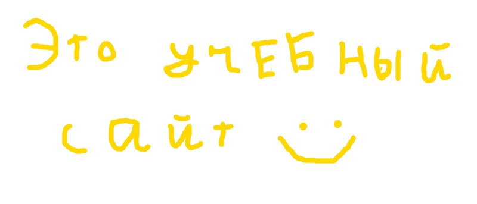

Основная информация
Этот сайт создан для того, что бы помочь вам подготовиться к зданию №4 в ЕГЭ 2023. Помощь эта
осуществляется с помощью теста, где вы можете проверить свои знания. И что бы не забыть закреплённые
знания рекомендуется регулярно проходить тестирование.
В ЕГЭ 2023 задание №4 преставляет собой проверку ваших умений раставлять запятые. Слова беруться вовсе не
случайные, а из словаря ФИПИ. Поэтому в целях экономии времени имеет смысл готовитья только по этим
словам.
Все слова из словаря вы можете увидеть здесь
Этот сайт являетя домашней работой по информатике. Но также этот тест создан для того, что бы помочь тем,
кому предстоит сдавать ЕГЭ по русскому языку в 2023. Год проведения ЕГЭ пишится везде совсем не
случайно, так как автор не планирует поддерживать этот продукт в будущем и возможно в скором времени он
будет заброшен. И из-за того что в последующие года задания ЕГЭ могут поменяться(Например могут
поменяться слова которые будут в этом задании) и актуальность этого сайта будет утерена, везде
упаминается год проведения ЕГЭ, во избежение несчатных случаев когда невнимательный пользователь, не
заметив то, что этот сайт потерял свою актуальность, начнёт по нему готоввиться и в итоге потеряет время
а может что-то и по хуже. Дальнейшая судьба сайта скорей всего сложится так, что он будет закрыт.
Ещё одной целью этого сайта является приобретением автора новых знаний по
созданию веб сайтов, поэтому просим не судить этот проэкт слишком строго. Также сайт был написан одним человеком.
Спасибо, что обратили на этот проэкт внимание! Желаем вам хорошо сдать ЕГЭ! ;)
Тест по заданию 4 ЕГЭ Русского языка
Тест
Этот тест предстовляет собой бесконечно генерируемые вопросы, где после каждого вопроса вам
будет
написано правильно ли вы на него ответили. В вопросе вам вам на экран выводят слово и снизу будут кнопки
с ответами. В этих кнопках написано как ставится ударение в слове(ударение выделяется большой буквой).
Ответов может быть столько, сколько и гласных в слове, но среди них только один правильный, ответы также
распологаются в случайном порядке. Этот тест абсолютно бесплатный, проходить вы его можете безлимитное
кол-во времени и безлимитное кол-во раз. Начать тест вы можете по кнопке снизу.
Начать тест
